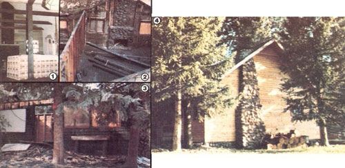

Issue # 72 - November/December 1981
This couple eliminated much of the cost usually involved in the owner-built home.
In these inflationary times, the major stumbling block facing folks who want to build their own home is often simply the bottom-line cost. Much of that expense has nothing to do with the ever-increasing prices of lumber and land, however. Both of those can be bargained for . . . given persistence, prudence, and a lot of legwork. Nor do the rest of the necessary finishing materials-such as windows, doors, paneling, hardware, roofing, and cabinets-account for all of those dollars. Such items can frequently be obtained by creative scavenging and careful combing of junk sales, auctions, flea markets and salvage yards.
Actually, one of the most expensive components of an ownerbuilt home is simply the hole in the ground that it sits on. After all, that "starting point" includes a costly excavation . . . a foundation . . . and a number of hookups ( including electricity, gas, water, sewer or septic tank, and that most maddening of all luxuries, the telephone).
You might also be surprised to hear, as my wife and I were when we set out to build, that the price of concrete has almost doubled in recent years. Worse yet, backhoe operators (who dig the main excavation and trenches for incoming, and outgoing service lines) command up to $100 an hour!
Furthermore, we found that the utility companies and city services would both have their hands out long before we were ready to lay one stick of wood on the foundation. Their fees for setting up the umbilicals (and the meters that attach) seemed high enough to daunt all but the hardiest, most stubborn do-it-yourselfer.
Finally, with building codes being tightened up in response to the human tendency to cut corners and save costs-and with local, state, and federal watchdogs mandating new regulations by the minute-we were faced with the realization that it's clanged difficult to build a home without such approved "necessities" as electricity and a sewer connection. Just try telling the city or county building inspector-for instance-that your house is going to be strictly solar heated . . . or that it won't require commercial electricity because you're going to wire it to a wind generator.
Or see what happens when you suggest that you've decided to forgo flush toilets in favor of composting ones. The watersaving commodes are still "experimental", the official will inform you . . . and intimate that you'd best postpone using that particular innovation until it's been approved by the local, state, and federal regulatory commissions.
I think you get the picture, and so did we. To be fair, though, I must admit that most bureaucrats don't enjoy pushing prospective owner/builders through an endless forest of red tape. Their concern stems mostly from a fear that nonconforming houses will lower local property values. But to a person who's painstakingly scraped together a down payment for a few acres of bare land or a city lot, the sudden realization that he or she will then have to come up with sizable permit charges, equipment rentals, architect fees for foundation plans, and other "incidentals" can be staggering . . . and often downright depressing!
MOUNTAIN MANIA
My wife and I had decided to move from Oregon to Colorado to "build a place of our own" in the mountains. We soon discovered, though, that the price of upland property was quite a bit higher than that of equivalent city lots down in the metropolis at the bottom of the pass. And, after haunting real estate offices in the pretty little mountain town we picked as our first home base, we realized that the small nest egg we'd accumulated over seven long years just wasn't enough. Day after day we looked for land/house combinations in town, around town, and beyond town. And each day we were told that a $5,000 to $6,000 down payment was the bare minimum for land . . . and with any sort of house on the property, the required "deposit" would be considerably more.
We finally decided we had enough money either to begin construction from the floor joists up . . . or to remodel an existing structure. So, although we'd dreamed of a brand-new house built lovingly with our own labor, we lowered our sights and decided to look for an old cabin that needed a major remodeling job.
The woods-which is where we hoped to live-were full of old cabins from the 20's and 30's . . . back when the town was little more than a summer retreat for wealthy flatlanders. Realty companies tactfully advertised the sad structures as "rustic handyman specials" . . . but most of them-to be truthful looked as if the last tenants had sported either fur or feathers. We soon learned that "fixer-upper" usually meant "bring your own dynamite".
WISHFUL THINKING
After one particularly horrible excursion that took us to a cow-filled house with no well, my spouse and I turned the car back in the direction of the smog and looked down toward the gray city that apparently was to be our home. We knew that we couldn't afford even to rent mountain property.
Before leaving, though, we decided to stop in "our" mountain community for a farewell lunch . . . and as we ate, we fantasized about the property we rally wanted to own, even though it seemingly wasn't in the cards. All we needed was a Predug foundation (cured and with all the hookups in place ready to build upon), a couple of fireplaces (we never wish for anything small when we're building castles in the airs, a garage or other outbuildings for tool and lumber storage, wood fences, and-what the heck-why not a yard full of trees?
As my wife and I described our dreamsite, we got more and more outrageous, until finally I stated flatly, "The place would have to have a garden spot and a well before I'd even consider buying it. Absolutely."
After lunch our enthusiastic daydreaming subsided to a dull ache as we took one last tour through the sky-capped village, realizing that we'd soon be city mice once again. With calm resignation we drove down a favorite back street . . . one that boasted an incredible view of a panoramic mountain. All the quaint cabins and small homes seemed to be full of friendly people who would never be our neighbors. I wistfully stared at each house as we drove by.
EUREKA! A SOLUTION IN SIGHT
Suddenly I hit the brakes, and our car skidded for several yards. There it was, right on the corner, exactly where it had been the dozens of times we'd driven by. We'd come to a halt next to a low, wide, squat cabin with a stone foundation . . . a detached garage . . . a tree-filled yard . . . and blackened gaping windows where a fire had lapped up and gutted the structure.
In fact, only the foundation and the garage were undamaged by the blaze. One charred but salvageable chimney rose, stone by stone, up one scorched outer wall. Another, at the far end of the house, was halfburied under rubble.
We got out of our car shakily, wondering at our own nearsightedness, and looked through the window holes at a blackened, hellish interior: large, charred beams . . . a floor covered with six inches of ash and insulation . . . exploded glass . . . and wooden furniture that seemed literally ready for the hibachi. We had to have it!
Now our eagerness probably sounds a little crazy, and-in retrospect-I guess we were a bit mad. The job of converting that blackened pit into a home turned out to be exhausting, dirty, and utterly hilarious at times, and not one person we talked to ever thought we could do it alone. Surprisingly enough, though, our greatest support came from the local building inspectors . . . the very folks we'd felt certain would be the toughest to convince. The local authorities encouraged our efforts to rebuild, because the property was an eyesore. In fact, the day after we looked at it, the city required the owner to board all the openings to prevent trespass.
A beret check through the foes at the tire department told us the owner's name. (By the way, such information is always a matter of public record . . . we even went ahead and looked up the names of owners of other places that had suffered a similar fate, just in case this deal fell through.) Believe it or not, it took only two phone calls to purchase the place. The house had been an income rental, and the fire had followed an explosion from a gas leak only a month previously. (It had happened between tenants, thank goodness.) The city had given the owner two months to raze or rebuild the structure, and suddenly we showed up . . . two people eager to buy the crispy castle as it stood! The owner accepted our first bid and even offered (through his attorney) to carry the contract until we could arrange permanent financing!
WHY SO IDEAL?
Once you consider the economics of supply and demand, you'll begin to understand why a burned-out house can be an excellent buy. When there's too much demand for something, and too little supply, prices will shoot up. But folks who are willing to accept something that not everyone can or will use often find that the price becomes quite negotiable.
Most people wouldn't consider the burned shell of a house to be particularly useful, but I knew that we could use it. After all, the hookups were already in-electric and telephone poles stood in the side yard, there was a stubbed water pipe, and even a septic tank-and, since we were willing to invest a lot of sweat in our new-found treasure, how could we lose?
The day after we closed the deal on the house, I visited the city building department and sketched out our plans to remove the existing structure, properly dispose of the debris, and rebuild on the same site . . . using the original foundation. My confidence must have been contagious, because I soon walked out with a building permit.
AND SO IT BEGINS
The hard part came first. It took us a full month just to tear down and haul away the burned building . . . but in that time the edge of our enthusiasm was only a little dulled. We snorted enough soot to qualify for coal miners' pensions . . . worked from sunup to sundown one day just scraping the floor down to the solid, singed hardwood . . . and discovered that it really does help to scream "Kreegah!" while smashing a wall apart with crowbars. ( Adrenalin is truly a miracle drug.)
All the salvageable materials went in one pile and all the trash-a small mountain of it-in another. When we hit the bare foundation and crawl space (we'd forgotten to wish for a basement!), we were overjoyed. For a tiny down payment and a month of sweat, we had a large intact foundation which had had 60 years to settle . . . two fireplaces ( one at each end) . . . a two-year supply of quick-starting firewood . . . about 1,000 board feet of one-inch mill run boards (which I used as exterior wall sheathing) . . . and ten huge scorched beams.
Those timbers, by the way, had actually been improved by the blaze. The beams simply needed to be wire-brushed down to the hard, undamaged wood . . . and our inspector was so impressed with their firehardened strength that he allowed us to use them as main support beams in the roof.
Once the frame of the structure was erected, it was easy to obtain a "finishing" construction loan from a bank that was impressed by our low investment and large return. ( We were prudent enough not to show them any "before" pictures. Instead, we accentuated the positive by showing only "after" shots!)
AND NOW IT ENDS
It took us two entire years to complete the job, but our house is built now: completely sided, comfortably warm, and full of designed-in features. We were limited only by the size of our foundation, our imaginations, and our pocketbook.
The whole process was similar to a large-make that massiveremodeling job. Yet our house is uniquely our own . . . a two-year-old home worth (at last appraisal) at least four tines the money we put into it. And the beneficial spinoffs resulting from our project have been pretty incredible, too. My first carpentry job here in Colorado, for example, was clinched when I pulled out pictures of my handiwork.
Would we do it again? Probably not . . . but then, we shouldn't ever have to. The trick in quantum jumping from renter to homeowner is to do it once and then let the equity from your "starter" home act as a down payment for a property you couldn't have afforded right off. As a matter of fact, we found our new "dream acreage" just a short while ago . . . and by the time you read this, we should be completely moved in. Two years ago a homestead-sized piece of property was simply out of our financial league.
Someone once said that a wish is the lowest form of desire . . . in other words, that it's a fantasy unaccompanied by the willingness to work hard to attain the goal. We were willing to put our labor into the bargain, though, and our "shopping list" wish was fulfilled completely, even down to the last two "absolute must" items. Our garden space never got tilled, it's true-because of the more pressing matters of building a house and working to pay for it-but it was there, just as requested.
And as for the well I'd demanded . . . even that was there, though it wasn't quite as we'd imagined. The original builder had constructed a rustic storybook well . . . but it was merely a landscape decoration. It was, in short, a wishing well!
|
 |
|
|